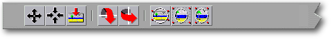
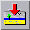

<!-- Documentation Xclamation (c)1994-2000 AXENE contact axene@axene.org>
<html>
<head>
<title>Barre horizontale d'icônes &quot;Image&quot;</title>
</head>

<body BGCOLOR="#FFFFFF" BACKGROUND="Images/back.gif" TEXT="#000000">
<p ALIGN="right">


<p>
<br>
<br>
La barre d'icônes 'Image' met à disposition des outils
permettant de modifier l'apparence d'une image dans son cadre. Pour
accéder aux icônes de cette barre, il faut impérativement
qu'un cadre unique, contenant une image, soit sélectionné
dans le plan d'affichage du document actif.
<br>
<br>
<hr>
<br>
<center>
<br>
<i><small>
Photo d'écran&nbsp;: Barre d'icônes Image
</i></small>
</center><p>
<br>
<hr>
<br>
<p>
<h3>Première section de la barre d'icônes&nbsp;:</h3>
<ul>
  <li>
     <a NAME="move_icon">le premier
     bouton icône permet de <b>déplacer l'image</b> à 
     l'intérieur de son cadre. Il faut cliquer pour saisir
     l'image, la repositionner, puis re-cliquer pour la déposer.
     Il est possible
     d'abandonner le déplacement de l'image, pendant son 
     repositionnement, en cliquant sur le bouton droit de la souris. 
     Un clic sur le bouton droit de la souris pendant que l'image est
     fixe repasse Xclamation en mode sélection.
     </a><p>
  <li>
     <a NAME="center_icon">le
     second bouton icône permet de <b>recentrer l'image</b> dans son
     cadre. Il fait correspondre le centre de l'image au centre du
     cadre.
     </a><p>
  <li>
     <a NAME="reset_icon">le
     troisième bouton icône permet de <b>réinitialiser
     l'image</b>, c'est-à-dire de la recentrer et de la
     remettre à à sa taille initiale.
     </a><p> 
</ul>

<p>
<br>
<h3>Seconde section de la barre d'icônes&nbsp;:</h3>
<ul>
  <li> 
     <a NAME="fliph_icon">le
     premier bouton icône permet d'<b>inverser verticalement
     l'image</b> dans son cadre. L'effet miroir consiste à 
     effectuer une symétrie
     par rapport à l'axe horizontal passant par le centre de
     l'image. Si le cadre a subi une rotation, la symétrie
     se fait par rapport à l'axe horizontal affecté par
     l'angle de rotation du cadre.
     </a><p>
  <li> 
     <a NAME="flipv_icon">le 
     second bouton icône permet d'<b>inverser horizontalement
     l'image</b> dans son cadre. L'effet miroir consiste à 
     effectuer une symétrie
     par rapport à l'axe vertical passant par le centre de l'image.
     Si le cadre a subi une rotation, la symétrie se fait par
     rapport à l'axe vertical affecté par l'angle de
     rotation du cadre.
     </a><p> 
</ul>
<p>
<br>
<h3>Troisième section de la barre d'icônes&nbsp;:</h3>
<ul>
  <li> 
     <a NAME="min_aspect_icon">le
     premier bouton icône permet d'<b>afficher l'intégralité
     de l'image sans déformation</b> dans son cadre. 
     Le facteur d'agrandissement de l'image change afin qu'elle soit
     entièrement visible dans le rectangle virtuel circonscrivant
     le cadre. Ce bouton définit un mode d'affichage. Par la suite,
     si la forme du cadre se modifie, l'image s'adapte
     automatiquement aux nouvelles dimensions du cadre. Pour enlever
     ce mode d'affichage, il suffit de choisir l'un des deux autres modes
     ou de désactiver ce bouton.
     </a><p>
  <li> 
     <a NAME="max_aspect_icon">le
     second bouton icône permet de <b>remplir l'intégralité
     du cadre avec l'image sans déformation</b>. Le
     facteur d'agrandissement de l'image change pour que le cadre 
     soit entièrement
     rempli avec l'image sans déformation de celle-ci. 
     Ce bouton définit un mode d'affichage. Par la suite,
     si la forme du cadre se modifie, l'image s'adapte
     automatiquement aux nouvelles dimensions du cadre. Pour enlever
     ce mode d'affichage, il suffit de choisir l'un des deux autres modes
     ou de désactiver ce bouton.
     </a><p>
  <li> 
     <a NAME="best_aspect_icon">le
     troisième bouton icône permet de <b>remplir l'intégralité 
     du cadre en affichant l'intégralité de l'image</b>.
     Le facteur d'agrandissement de l'image change en horizontal et en vertical
     indépendamment, afin que les dimensions de l'image soient
     égales à celles du rectangle virtuel circonscrivant
     le cadre. L'image est donc déformée. Ce bouton définit
     un mode d'affichage. Par la suite,
     si la forme du cadre se modifie, l'image s'adapte
     automatiquement aux nouvelles dimensions du cadre. Pour enlever
     ce mode d'affichage, il suffit de choisir l'un des deux autres modes
     ou de désactiver ce bouton.
     </a><p> 
</ul>
<br>
<hr>
<p ALIGN="right">
<p>
</body>
</html>

